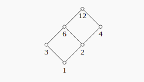
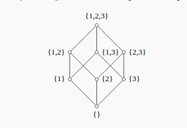
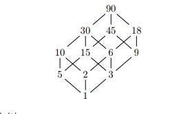

‘-r markdown+tex_math_single_backslash+simple_tables+table_captions+yaml_metadata_block+smart+blank_before_blockquote+backtick_code_blocks’
Note that the theory is important for Combinatorics, just knowing what definitions are and what various expressions counts, but this is a very problem-driven subject! These are your tools – it is worth delineating exactly what kinds of problems are tractable, and which are more difficult. But the ultimate skill in this kind of course is to know when to apply which tool to a problem, how to translate problems into things you know how to count, and how to seamlessly move back and forth between various combinatorial interpretations.
So problems are the best practice!
$\theset{a, b, c, \cdots} = \theset{b, c, a, \cdots} = \theset{c, b, a, \cdots} = \cdots$ is a set, a structure which contains some finite number of unique elements, and there is a-priori notion of "order" or an indexing operation (i.e. there is no distinguished "first" element, etc).
If $S$ is a set, then $\# S$ denotes the size of the set, i.e. a count of the number of elements contained in $S$.
$[a, b, c] \neq [b, c, a]$ is an ordered list (also called a $k\dash$tuple), a structure of not-necessarily unique elements from some set in which there is a well-defined order/indexing operation.
For any given $n$, there is essentially one set of size $n$, the set $[n] = \theset{1,2,\cdots n}$. It is a theorem that every set admits a well-ordering, and a consequence of this is that any set $S$ of countable size $n$ admits a bijective map $S \to [n]$. So $S \cong [n]$ in the category of Sets, "up to relabeling" of elements.
But be careful! $[n]$ comes with its own labeling **and ** its own ordering $1 \leq 2 \leq \cdots$, and so should perhaps be regarded as an ordered list with unique elements instead. As a set, we can order the elements any way and obtain the same set.
$S_n$ denotes the symmetric group on $n$ elements; each element of this group is a bijective function $[n]\to[n]$. Combinatorialists really love this group, and it secretly shows up in most counting problems.
A permutation $\sigma$ is an element of $S_n$, We can specify a bijection by describing where it sends every element, so for example, define
Write $1\cdots n$, and under each number, write where it is sent to under $\sigma$:
Noting that in the above notation, we’ll always write $1\cdots n$ in the top row, we can just omit it and implicitly agree that the $k\dash$th position denotes where the integer $k$ is mapped to:
In general, we write a concatenated list of numbers
Since $S_n$ is a finite group, we know that every element will have finite order. So for some given number $i$, we can look at the iterates $\sigma(i), \sigma^2(i) = \sigma(\sigma(i)), \sigma^3(i), \cdots$ and there will be some $k$ for which $\sigma^k(i) = i$. This sequence of images is called a cycle, and it turns out that we can recover our permutation entirely from exhaustively recording the cycles.
The algorithm: start with $1$, then compute all $\sigma^i(1)$. Write the resulting numbers in parentheses, then take the smallest number you haven’t seen yet, open a new parenthesis, and repeat until all numbers $1 \cdots n$ appear somewhere. Finally, if any set of parentheses contains only a single number (so $\sigma(i) = i$ after only 1 iteration), omit it.
Our example:
In general, we write
Observations/notes:
We can count the number of bijections from an $n$ element set to itself:
If $\#\Sigma = k$ is some set (which we’ll regard as "formal symbols"), we can count the number of ordered lists:
Let
Let
Counts the number of ways to form a $k\dash$element subset of a set of $n$ items:
We can extend the “choose” notation and thus the binomial formula to rational powers by defining
Note that this allows us to expand things such as $\sqrt{x+y} = (x+y)^\frac{1}{2}$ in an infinite sum:
We can thus count the number of $k\dash$element multisets of an $n\dash$element set:
Proof: Multisets can be put in bijection with unrestricted stars and bars arrangements, see next section. $\qed$
Consider the problem of counting the number of $n\times n$ lattice paths that don’t go above the diagonal. Since every such path has to have a "first hitting time" for the diagonal, we can enumerate these using a recurrence relation. Let $C_n$ be the number of such paths. If the first hit occurs on the $k$th diagonal, then there were $C_k$ paths leading there and $C_{n-k}$ paths to the top-right corner. This yields
A useful conceptual counting problem, as many other problems can be encoded as some version of this. The idea is we have an alphabet $\Sigma = \theset{\star, \mid}$ ("star" and "bar"), and we’d like to form certain words containing exactly $n$ copies of $\star$ and $k$ copies of $\mid$.
There are two variants: we’ll say a configuration of stars and bars is strict if a bar does not occur as the first or last symbol, and there are no two adjacent bars.
This can be counted as
Proof: Lay out $n$ stars, which have $n-1$ gaps between them. From these gaps, choose any $k-1$ of them (without replacement) to contain bars.$\qed$
With no restrictions of the configuration, we can count
Proof: Since we just need to form an arbitrary word from $n$ stars and $k-1$ bars, simply place $n + (k-1)$ blanks, choose $k-1$ of them (without replacement) to be bars, and place stars everywhere else.
Alternate proof: Lay out $n$ stars, then from the $n-1$ gaps, choose $k-1$ gaps with replacement to contain bars. This can be done in $\multinomial{n-1 \choose k-1} = {n+k-1 \choose k-1}$ ways. $\qed$
For a given $n$, consider permutations $\sigma \in S_n$. It can be written as a product of disjoint cycles in cycle notation, so one can ask how many permutations have exactly $k$ disjoint cycles. In other words, we have
In other applications, there is a signed Stirling number of the first kind which are related by
$$s(n, k) \definedas (-1)^{n-k}c(n, k), \quad \abs{s(n,k)} = c(n, k)$$
These yield the coefficients of $x^n$ in the falling factorial $x^{\underline n} = x(x-1)\cdots(x-n+1)$.
There isn’t a particularly nice closed form expression for $c(n, k)$, so the main computational tool is the following recurrence relation they satisfy:
A set partition of $[n]$ into $k$ parts is a collection $S_1, S_2, \cdots S_k$ where
We can then count
Proof (with a valuable technique!): When forming a set partition of $[n]$ into $k$ parts, there are two disjoint cases: either $n$ is in a singleton set, or it is not.
In general, a composition is a way of writing $n$ as a sum of positive integers, i.e. $n = a_1 + a_2 + \cdots$ where $a_i \in \ZZ$. There are infinitely many of these, so to count anything, we need to place various restrictions:
A composition of $n$ into $k$ parts is an ordered list $[a_1, a_2, \cdots a_k]$ such that $\sum_{i=1}^k a_i = n$ and for each $i$ we have $0 < a_i \leq n$. (Note that we do not allow any $a_i$ to be zero now.)
These can be counted as
A weak composition of $n$ into $k$ parts is an ordered list $[a_1, a_2, \cdots a_k]$ such that$\sum_{i=1}^k a_i = n$ and for each $i$ we have $0 \leq a_i \leq n$. (Note that we allow some $a_i$ to be zero.)
These can be counted as
An integer partition of $n$ into $k$ parts is a strong composition of $n$ into $k$ parts where we identify any compositions that differ by a permutation of of parts. In other words, it is a set of integers $[a_1, a_2, \cdots a_k]$ such that $\sum_{i=1}^k a_i = n$ and for each i, $1 \leq a_i \leq n$.
Example: The strong compositions of 4 are
from sage.all import * print(sorted(list(Compositions(4)), key=len))
[[4], [1, 3], [2, 2], [3, 1], [1, 1, 2], [1, 2, 1], [2, 1, 1], [1, 1, 1, 1]]
while the integer partitions are
from sage.all import * print(sorted(list(Partitions(4)), key=len))
[[4], [3, 1], [2, 2], [2, 1, 1], [1, 1, 1, 1]]
Note that $[3,1]$ and $[1,3]$ are distinct as compositions of 4 into 2 parts, but are identified as partitions of 4 into 2 parts.
These are generally difficult to count, but we can define
Integer partitions are in bijective correspondence with Ferrer’s diagrams, which provide many useful ways of extracting information via diagram operations. The most important operation is conjugation, which is flipping a diagram about its main diagonal. This operation can be used to prove the following bijections between types of integer partitions:
Usually given or put in the form of $a_n = f(a_{n-1}, a_{n-2}, \cdots)$
The secret sauce:
Ordinary Generating Functions
| Sequence | OGF | Sum |
|---|---|---|
| $[1, 1, 1, \cdots]$ | $\frac 1 {1-x}$ | $\displaystyle\sum_{n\geq 0}1x^n$ |
| $[1, -1, 1, \cdots]$ | $\frac 1 {1+x}$ | $\displaystyle\sum_{n\geq 0}(-1)^nx^n$ |
| $[r, r^2, r^3, \cdots]$ | $\frac 1 {1-rx}$ | $\displaystyle\sum_{n\geq 0}r^nx^n$ |
| $[1, 0, 1, \cdots]$ | $\frac 1 {1-x^2}$ | $\displaystyle\sum_{n\geq 0}1x^{2n}$ |
| $[1, 0, 0, 1, \cdots]$ | $\frac 1 {1-x^3}$ | $\displaystyle\sum_{n\geq 0}1x^{3n}$ |
| $[1, 2, 3, 4, \cdots]$ | $\dd{}{x}\frac 1 {1-x} = \left(\frac{1}{1-x}\right)^2$ | $\displaystyle\sum_{n\geq 0}(n+1)x^{n}$ |
| $[0, 1, 2, 3, \cdots]$ | $x\dd{}{x}\frac 1 {1-x} = x\left(\frac{1}{1-x}\right)^2$ | $\displaystyle\sum_{n\geq 0}nx^{n}$ |
| $[1,{c \choose 1}, {c \choose 2}, \cdots]$ | $(1+x)^c$ | $\displaystyle\sum_{n\geq 0}{c \choose n}x^n$ |
| $[1, {c+1 \choose 1}, {c+2 \choose 2}, \cdots]$ | $\left( \frac 1 {1-x} \right)^c$ | $\displaystyle\sum_{n \geq 0}{n+c \choose n} x^n$ |
| $[0,\cdots 0, {c \choose c}, {c+1 \choose c}, \cdots]$ | $x^c \left(\frac{1}{1-x}\right)^{c+1}$ | $\displaystyle\sum_{n\geq c}{n \choose c}x^n$ |
| $[1, A(x), A(x)^2, \cdots ]$ | $\frac {1}{1-A(x)}$ | $\displaystyle\sum_{n\geq 0} A(x)^n {x^n}$ |
| $[\sum_{i=0}^0 a_i, \sum_{i=0}^1 a_i, \sum_{i=0}^2 a_i, \cdots ]$ | $\frac{A(x)}{1-x}$ | $\displaystyle\sum_{n\geq 0} \left(\sum_{i=0}^n a_n\right) \frac{x^n}{n!}$ |
Exponential Generating Functions
| Sequence | EGF | Sum |
|---|---|---|
| $[1, 1, 1, \cdots]$ | $e^x$ | $\displaystyle\sum_{n\geq 0}1 \frac {x^n} {n!}$ |
| $[r, r^2, r^3, \cdots]$ | $e^{rx}$ | $\displaystyle\sum_{n\geq 0}r^n\frac {x^n} {n!}$ |
| $[1, 0, 1, \cdots]$ | $\cosh(x)$ | $\displaystyle\sum_{n\geq 0}1 \frac {x^{2n}} {n!}$ |
| $[1, 0, 0, 1, \cdots]$ | $?$ | $\displaystyle\sum_{n \geq 0} 1\frac{x^{2n}}{(2n)!}$ |
| $[0, 1, 2, 3, \cdots]$ | $xe^x$ | $\displaystyle\sum_{n\geq 1}n \frac {x^n} {n!}$ |
| $[1,{c \choose 1}, {c \choose 2}, \cdots]$ | $(1+x)^c$ | $\displaystyle\sum_{n\geq 0}{c \choose n}\frac {x^n} {n!}$ |
| $[0,\cdots 0, {c \choose c}, {c+1 \choose c}, \cdots]$ | $x^c \left(\frac{1}{1-x}\right)^{c+1}$ | $\displaystyle\sum_{n\geq c}{n \choose c}\frac {x^n} {n!}$ |
| $[1, {c+1 \choose 1}, {c+2 \choose 2}, \cdots]$ | $\left( \frac 1 {1-x} \right)^c$ | $\displaystyle\sum_{n \geq 0}{n+c \choose n} \frac {x^n} {n!}$ |
| $[0, 0!, 1!, 2!, \cdots ]$ | $\ln \frac{1}{1-x}$ | $\displaystyle\sum_{n \geq 0}(n-1)! \frac{x^n}{n!}$ |
| $[1, A(x), A(x)^2, \cdots ]$ | $e^{A(x)}$ | $\displaystyle\sum_{n\geq 0} A(x)^n \frac{x^n}{n!}$ |
| Sequence | OGF | EGF |
|---|---|---|
| $a_n = \indicator{n=k}$ | $x^k$ | $\frac{x^k}{k!}$ |
| $a_n = \indicator{n \geq 0} (\NN)$ | $\frac 1 {1-x}$ | $e^x$ |
| $a_n = \indicator{n \geq 1} (\NN_{\geq 1})$ | $\frac x {1-x}$ | $e^x - 1$ |
| $a_n = \indicator{n \geq 2} (\NN_{\geq 2})$ | $\frac {x^2} {1-x}$ | $e^x - 1 - x$ |
| $a_n = \indicator{n \geq k}$ | $\frac {x^k} {1-x}$ | $e^x - \displaystyle\sum_{n=0}^k \frac{x^n}{n!} =\displaystyle\sum_{n=k+1}^\infty \frac{x^n}{n!}$ |
| $a_n = \indicator{n \leq k}$ | $1+x+x^2+\cdots +x^k$ | $1 + x + \frac{x^2}{2} + \cdots +\frac{x^k}{k!}$ |
| $a_n = \indicator{n\text{ even}}$ | $\frac{1}{1-x^2}$ | $\cosh(x)$ |
| $a_n = \indicator{n\text{ odd}}$ | $\frac{x}{1-x^2}$ | $\sinh(x)$ |
| $a_n = \indicator{n = k, k^2, \cdots}$ | $\frac 1 {1-x^k}$ | $e^{kx}$ |
| $a_n = {n \choose c}$ | $ex$ | $x^c \left(\frac{1}{1-x}\right)^{c+1}$ |
| $a_n = {n+c \choose n}$ | $ex$ | $\left( \frac 1 {1-x} \right)^c$ |
| $a_n = {c \choose n}$ | $$ | $(1+x)^c$ |
| $a_n = n!$ | $\emptyset$ | $\frac{1}{1-x}$ |
A linear ordered partition of $[n]$ (say, into 2 blocks) is a set partition
An arbitrary ordered partition of $[n]$ (again into 2 parts) is a set partition as above, where we no longer require the inequality. The ordered portion again denotes the labels on the $S_i$, so we have $[S_1, S_2] \neq [S_2, S_1]$ and distinguish these as ordered partitions.
Ordinary Generating Functions
| OGF Operation | Effect | Sum |
|---|---|---|
| $xA(x)$ | Right shift | $\displaystyle\sum_{n\geq 0}a_{n} x^{n+1} = \displaystyle\sum_{n\geq 1}a_{n-1} x^{n}$ |
| $x\inv (A(x) - a_0)$ | Left shift | $\displaystyle\sum_{n\geq 0}a_{n+1} x^{n}$ |
| $\dd{}{x}A(x)$ | Multiply by index, then left shift | $\displaystyle\sum_{n\geq 1}n a_n x^{n-1} = \displaystyle\sum_{n\geq 0}(n+1) a_{n+1}x^n$ |
| $x\dd{}{x}A(x)$ | Multiply by index | $\displaystyle\sum_{n\geq 0}n a_n x^n$ |
| $\displaystyle\int A(x)$ | Divide by index, then right shift | $\displaystyle\sum_{n\geq 0}\frac 1 {n+1} a^{n}x^{n+1} = \displaystyle\sum_{n\geq 1}\frac 1 n a_{n-1} x^{n}$ |
| $\displaystyle\int x\inv(A(x) - a_0)$ | Divide by index | $\displaystyle\sum_{n\geq 1} \frac{1}{n} a_n x^n$ |
| $C(x) = A(x)B(x)$ | Convolution / Sum over ways to split into 2 linear parts | $\displaystyle\sum_{n\geq 0} \left( \displaystyle\sum_{i+j=n} a_i b_j\right)x^n$ |
| $D(x) = A(x)B(x)C(x)$ | Convolution / Sum over ways to split into 3 linear parts | $\displaystyle\sum_{n\geq 0} \left( \displaystyle\sum_{i+j+k=n} a_i b_j c_k\right) {x^n}$ |
| $F(x) = A(B(x))$ | Partition into any number of linearly ordered blocks, put a $B$ structure within each block, and an $A$ structure on the collection of blocks | $\displaystyle\sum_{n\geq 0} a_n {\left( \displaystyle\sum_{m\geq 0} b_m \frac{x^m}{m!}\right)^n}$ |
Exponential Generating Functions
| EGF Operation | Effect | Sum |
|---|---|---|
| $xA(x)$ | Index multiply, then right shift | $\displaystyle\sum_{n\geq 0}a_{n} \frac{x^{n+1}}{n!} = \displaystyle\sum_{n\geq 1}n a_{n-1} \frac{x^n}{n!}$ |
| $x\inv (A(x) - a_0)$ | Index divide, then left shift | $\displaystyle\sum_{n\geq 0}a_{n+1} \frac{x^n}{n!}$ |
| $\dd{}{x}A(x)$ | Left shift | $\displaystyle\sum_{n\geq 1}n a_n \frac{x^{n-1}}{n!} = \displaystyle\sum_{n\geq 0}a_{n+1} \frac{x^n}{n!}$ |
| $\displaystyle\int A(x)$ | Right shift | $\displaystyle\sum_{n\geq 0}\frac {a^{n}} {n+1} \frac{x^{n+1}}{n!} = \displaystyle\sum_{n\geq 1} a_{n-1} \frac{x^n}{n!}$ |
| $x\dd{}{x}A(x)$ | Index multiply | $\displaystyle\sum_{n\geq 0}n a_{n} \frac{x^n}{n!}$ |
| $\displaystyle\int x\inv (A(x) - a_0)?$ | Index divide | $\displaystyle\sum_{n\geq 1} \frac{a_n}{n} \frac{x^n}{n!}$ |
| $C(x) = A(x)B(x)$ | Convolution / Sum over ways to split into 2 arbitrary blocks | $\displaystyle\sum_{n\geq 0} \left( \displaystyle\sum_{i+j=n} a_i b_j\right) \frac{x^n}{n!}$ |
| $D(x) = A(x)B(x)C(x)$ | Convolution / Sum over ways to split into 3 arbitrary blocks | $\displaystyle\sum_{n\geq 0} \left( \displaystyle\sum_{i+j+k=n} a_i b_j c_k\right) \frac{x^n}{n!}$ |
| $F(x) = A(B(x))$ | Partition into any number of ordered blocks, put a $B$ structure within each block, and an $A$ structure on the collection of blocks | $\displaystyle\sum_{n\geq 0} a_n {\left( \displaystyle\sum_{m\geq 0} b_m \frac{x^m}{m!}\right)^n}\frac{1}{n!}$ |
Comparisons
| Operation | OGF | EGF |
|---|---|---|
| Right Shift | $xA(x)$ | $\displaystyle\int_0^x A(x)$ |
| Left Shift | $x\inv (A(x) - a_0)$ | $\dd{}{x} A(x)$ |
| Index Multiply | $x\dd{}{x}A(x)$ | $A(x)$ |
| Index Divide | $\displaystyle\int_0^x x\inv (A(x) - a_0)$ | |
| $A(x)B(x)$ | 2 linearly ordered blocks, $A\dash$structure on block 1, $B\dash$structure on block 2 | 2 arbitrary ordered blocks, $A\dash$structure on block 1, $B\dash$structure on block 2 |
| $A(x)B(x)C(x)$ | 3 linearly ordered blocks, $A\dash$structure on block 1, $B\dash$structure on block 2, $C\dash$structure on block 3 | 3 arbitrary ordered blocks, $A\dash$structure on block 1, $B\dash$structure on block 2, $C\dash$structure on block 3 |
| $\displaystyle \prod_{i=1}^k A_i(x)$ | $k$ linearly ordered blocks, an $A_i$ structure on block $i$ | $k$ arbitrary ordered blocks, an $A_i$ structure on block $i$ |
| $A(x)^k$ | $k$ linearly ordered blocks, an $A$ structure on every block | $k$ arbitrary ordered blocks, an $A$ structure on every block |
| $\displaystyle\sum_{i=1}^\infty A(x)^i = A(x) + A(x)^2 + \cdots$ | Any # of linearly ordered blocks, an $A$ structure on every block | Any # of ordered blocks, an $A$ structure on every block |
| $B(A(x))$ | Any # of linearly ordered blocks, $A\dash$structure on each block, $B\dash$structure on collection of blocks | Any # of ordered blocks, an $A\dash$structure on each block, $B\dash$structure on collection of blocks |
Note that
| Structure | Sequence | OGF | EGF |
|---|---|---|---|
| Be exactly $n$ | $[0, 0, \cdots 0, 1, 0, \cdots]$ | $x^n$ | $\frac {x^n} {n!}$ |
| Be a natural number $\geq 0$ | $[1,1,1,\cdots]$ | $\frac 1 {1-x}$ | $e^x$ |
| Be a natural number $\geq 1$ | $[0,1,1,\cdots]$ | $\frac x {1-x}$ | $e^x - 1$ |
| Be an even number | $[1,0,1,0\cdots]$ | $\frac 1 {1-x^2}$ | $\cosh(x)$ |
| Be an odd positive number | $[0,1,0,1,\cdots]$ | $\frac x {1-x^2}$ | $\sinh(x)$ |
| Be an odd number or zero | $[1,1,0,1,\cdots]$ | $\frac x {1-x^2} + 1$ | $\sinh(x)+1$ |
| Be an even positive number | $[0,0,1,0\cdots]$ | $\frac 1 {1-x^2} - 1$ | $\cosh(x) - 1$ |
| Be a multiple of $k$ | $[1,0,\cdots 0,1,0,\cdots 0, 1, 0, \cdots]$ | $\frac 1 {1-x^k}$ | $1 + \frac{x^k}{k!} + \frac{x^{2k}}{(2k)!} + \cdots$ |
Note
Note that conjugation is useful for obtaining equivalent formulas involve $p(n, k)$.
OGF for $a_n = \#\theset{\text{Set partitions of$[n]$into$k$blocks}}$
EGF for $a_n = \#\theset{\text{Length$n$words over$\Sigma = [5]$}}$
EGF for $a_n = \#\theset{\text{Length$n$words over$\Sigma =[3] \suchthat \cdots$restrictions}}$
Example: suppose that
Use the product rule.
Partition $[n]$ into 3 arbitrary ordered blocks. Put the above structures on them, yielding the EGFs:
Using the product rule, we obtain
EGF for
EGF for $a_n = \#\theset{\text{Subsets of$[n]$}}$:
EGF for $a_n = \#\theset{\text{Nonempty Subsets of$[n]$}}$:
EGF for $a_n = \#\theset{\text{Ways to choose$k$subsets of$[n]$}}$
EGF for $a_n = \#\theset{\text{Partitions of$[n]$into$k$parts}}$
EGF for $a_n = \#\theset{\text{Partions of$[n]$into any # of parts}}$
EGF for $a_n = \#\theset{\text{Partitions of$[n]$into only even parts}}$
EGF for $a_n = \#\theset{\text{Permutations$\sigma \in S_n$with no fixed points}}$ (Derangements)
EGF for $a_n = \#\theset{\text{Words over$\Sigma = \theset{\alpha, \beta, \gamma} \suchthat # \alpha, #\beta$are even }}$
EGF for $a_n = \#\theset{\text{Permutations that are products of disjoint transpositions}}$
Definition: A poset (partially-ordered set) is a pair $(S, \preceq)$ where $\preceq$ is a relation on $S$ that is
Notice that this behaves very much like $(\ZZ, \leq)$, so we’ll often used $\leq$ to denote the relation. However, there is an important distinction – there may be incomparable elements, i.e. pairs $a,b \in S$ such that neither $a\leq b$ or $b\leq a$ holds. This is why the order is "partial". Also note that it makes sense in this setting to write things like $a< b$, which just means $a\leq b$ and $a\neq b$.
If every two elements are comparable, $\preceq$ is called total order and $(S, \preceq)$ is called a chain. Weakening this condition slightly, if for every two elements $x,y\in S$ there exists some $s\in S$ such that $s\leq x$ and $s \leq y$, we say $S$ is a directed poset.
Examples:
Definition: An open section of a poset is defined as
We can define the notions of an open interval from $\alpha$ to $\beta$, closed interval, and half-open intervals respectively:
Definition: we say that $y$ covers $x$ if
Definition: If $S_x = \emptyset$, $x$ is said to be a minimal element. Similarly, if $\overline{S_y} = S$, $y$ is said to be a maximal element.
In a subtle distinction, if $x \in S_s$ for every $s\in S$, then $x$ is unique and is said to be the minimum element and denoted $\mathbf 0$. Similarly, if $S_y = S-\theset{y}$, then $y$ is said to be a (not necessarily unique) maximal element and is denoted $\mathbf 1$.
Definition: A Hasse diagram for a poset $(S, \leq)$ is an graph obtained by letting the verticies of $G$ be the elements of $S$, connecting a directed edge from $x\to y$ iff $y$ covers $x$, arranging this graph so all arrows point upwards and incomparable elements are lined up horizontally.
These are generally written without vertex labels or edge directions, yielding an undirected graph on $\# S$ vertices.
Examples:
$(D(12), \mid)$: the divisors of 12 ordered by divisibility

$(\mathcal{P}([n]), \subseteq)$: Subsets of $[3]$ ordered by inclusion.

Definition: A subset of a poset $U \subseteq S$ is called an upper set if it is absorbing everything above it with respect to the partial order, i.e.
or in other words, $\overline{S_u^c} \subseteq U$
and similarly, $L$ is called a lower set if absorbs everything below it:
Definition: A subset $L \subseteq S$ is an order ideal if it is a non-empty directed lower set.
Given any poset, we can define the incidence algebra
This is an algebra because it is a vector space over $\RR$, and has a bilinear product:
Under this product,
Moreover, if $f(x,x) \neq 0$, then $f^{-1}$ exists such that $f\ast f^{-1} = \delta$, so we can define $\mu = \zeta\inv$, which can be shown has the formula

Note that from this, we find that for the divisibility poset,
In general, there is a Mobius inversion formula:
which, for finite posets, equivalently says that if $X$ is the incidence matrix of (a linear extension) of a poset $P$, then as matrices we have $M = [\mu(x_i, x_j)] = X\inv$.
Some notes on lists:
Bonus: It can be shown using ordinary generating functions that
Bonus: a closed formula for the Stirling numbers of the second kind is given by